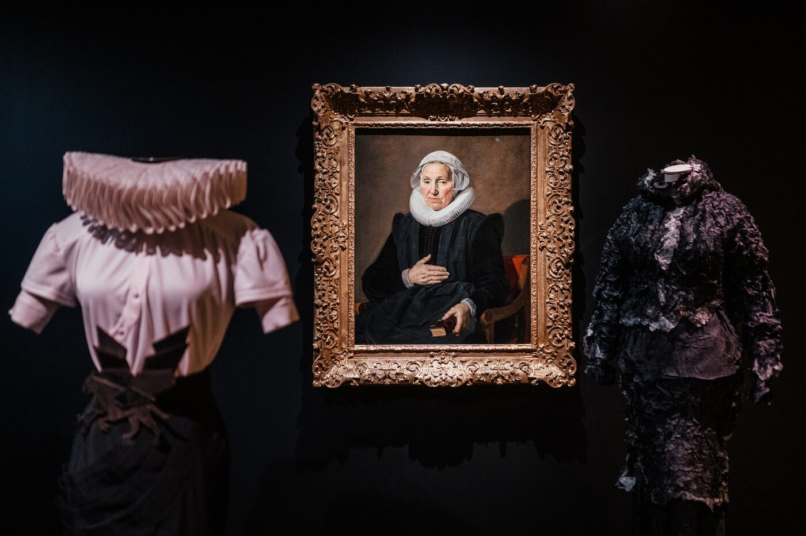

There is a photograph from the original campaign that tells the story before you read a single word. Victoria Beckham stands in a white studio, one hand resting on the waistband of a pair of dark-wash jeans, the other holding the collar of a blazer so precisely constructed it could have come from a Savile Row atelier. The jeans cost forty-eight dollars. The blazer costs two hundred and ninety-eight. Neither looks like a concession. This, in a single frame, is the proposition of the Victoria Beckham × Gap collection — and it is a proposition worth taking seriously.
Launched in April 2026, the collaboration comprises thirty-eight pieces spanning womenswear and menswear, priced between twenty-eight and two hundred and ninety-eight dollars. The numbers alone would make it a story. But what elevates this partnership beyond a conventional designer-meets-high-street exercise is the ambition behind it, and the particular moment in fashion history to which it responds. Beckham has not lent her name to a rail of watered-down runway copies. She has designed, from scratch, a collection that operates on its own terms — and at its centre sits a new denim silhouette that may well outlast the collaboration itself.
The Arc Jean is the centrepiece, a wide-leg cut with a curved seam at the hip that Beckham developed with Gap’s in-house design team over the course of fourteen months. It arrives in three washes — a raw indigo, a mid-blue with a gentle fade, and a bone white — and each carries the subtle hallmarks of Beckham’s mainline aesthetic: the proportions are generous but controlled, the rise is considered, the fabric has enough weight to hold its shape without stiffness. At forty-eight dollars, it represents an almost aggressive act of accessibility.
Gap’s chief executive, Mark Breitbard, described it as “the most significant creative partnership in Gap’s history since Kanye.” The comparison is instructive. Where Yeezy Gap was characterised by conceptual audacity and logistical chaos, the Beckham collaboration is defined by discipline. Every piece in the collection — the tailored trousers, the cashmere-blend knits, the structured blazers, the silk-finish T-shirts — was designed to work with every other piece. It is a system, not a statement. The menswear offering is deliberately restrained: bombers, relaxed trousers, classic crewnecks, all rendered in a palette of navy, charcoal, and off-white that feels less like fashion and more like a permanent vocabulary.
“The Arc Jean is not a compromise — it is a proposition: that the silhouette a woman reaches for every morning deserves the same attention as a runway collection.”Sienna Caldwell
The commercial response has been extraordinary. Sixty per cent of the collection’s inventory sold out within the first forty-eight hours. The Arc Jean had a waitlist of forty thousand before launch — a figure that speaks not just to demand but to a kind of collective anticipation, a sense that this particular garment had been designed to fill a gap (forgive the pun) that women had felt for years. The question of what a “good” pair of jeans costs, and what a “good” pair of jeans should look like, has been quietly reopened.
To understand why this matters, one has to look at Beckham’s trajectory. She launched her eponymous label in 2008, spent more than a decade building it into a critically respected brand, weathered years of losses, and finally steered it to profitability in 2024. The luxury business is secure. The reputation is established. This is not a designer reaching down from necessity; it is a designer reaching across from conviction. Beckham has spoken, in interviews around the launch, of growing up in a household where fashion was a pleasure but never an extravagance — her mother bought well and wore things for years. The Gap partnership, she has said, is an attempt to offer that same sensibility at a price that does not require justification.

This is Beckham’s first mass-market collaboration since leaving Reebok nearly two decades ago, and the landscape has changed beyond recognition. The old model — a luxury house licenses its name, a high-street retailer produces approximations, everyone pretends the result is exciting — has been exhausted. What has replaced it is something more interesting and more demanding: a model in which the designer’s involvement is genuine, the creative control is shared rather than surrendered, and the resulting product is expected to stand on its own merits.
Phoebe Philo’s direct-to-consumer label, launched in 2023 and now into its fifth drop, demonstrated that a designer could step outside the traditional fashion system entirely and still command extraordinary loyalty. Daniel Lee’s Burberry × Hunza G capsule showed that a creative director could engage with a smaller, independent brand on terms that felt collaborative rather than colonial. Beckham’s Gap collection extends this logic further: it suggests that the boundary between luxury and accessible fashion is not a wall to be scaled or a border to be policed, but a line being quietly erased by the designers themselves.
There is, inevitably, a tension here. Democratic luxury is a phrase that flatters, but it can also obscure. A forty-eight-dollar pair of jeans is not the same as a six-hundred-dollar pair, in construction or in longevity. What Beckham has achieved, though, is a kind of honesty about what mass-market fashion can be when it is designed with genuine care. The Arc Jean does not pretend to be a luxury garment. It pretends to nothing at all. It is simply a well-designed pair of jeans at a fair price, and in a market glutted with overpriced mediocrity at every tier, that modesty is its own form of radicalism.
The collection will be replenished quarterly, with new silhouettes introduced each season alongside core pieces that will remain permanently in stock. It is, in other words, not a capsule but a commitment — and it is that commitment, more than any single garment, that makes this partnership significant. Beckham has not dropped in and moved on. She has planted a flag in territory that most luxury designers still regard with suspicion, and she appears to have no intention of retreating.
Fashion, at its best, is an argument about how people should be able to live. The Victoria Beckham × Gap collection makes a disarmingly simple one: that a woman pulling on her jeans at seven in the morning, before the school run or the commute, deserves the same quality of thought and design that goes into a piece shown on a Paris runway. It is not a revolutionary argument. But it is a necessary one, and it has been made, here, with uncommon conviction.